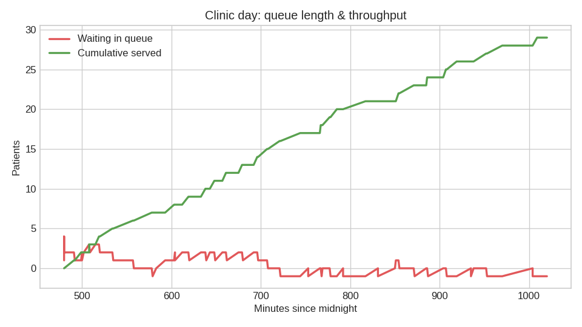
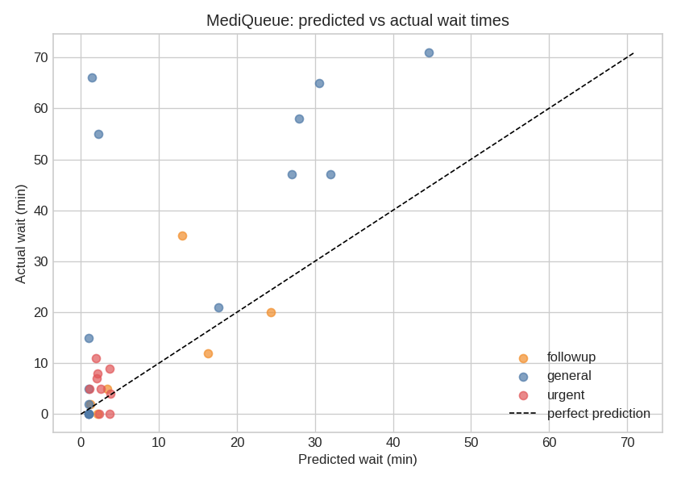

Smart virtual queue with ML-predicted wait times · UN SDG 3: Good Health & Well-Being


| Served | 29.0 |
| Avg Predicted | 9.4 |
| Avg Actual | 19.8 |
| Mae Minutes | 11.8 |
| Max Consecutive Urgent | 2.0 |
Generated by MediQueue demo · model: RandomForestRegressor